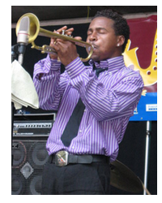

Hargrove was born October 16, 1969 in Waco, Texas, to parents who early in his childhood discovered his musical potential, and with lessons on the trumpet, was discovered as a potential jazz talent when trumpet player Wynton Marsalis visited his high school, Dallas's Booker T. Washington High School for the Performing and Visual Arts. One of his influences was saxophone player David "Fathead" Newman, who performed in Ray Charles' Band at Hargrove's junior high school. Hargrove spent one year (1988–1989) studying at Boston's Berklee College of Music, but could more often be found in New York City jam sessions, and finally transferred to the New School, in New York. His first recording there was with the saxophonist Bobby Watson. Shortly afterwards he made a recording with Superblue featuring Watson, Mulgrew Miller, and Kenny Washington. In 1990 he released his first solo album, Diamond in the Rough, on the Novus/RCA label, along with four other albums.
In 1993 he was commissioned by the Lincoln Center Jazz Orchestra, and wrote The Love Suite: In Mahogany. Hargrove won a Grammy Award in 1998 for the album Habana with the Afro-Cuban band he founded, "Crisol".
Hargrove moved on, recording Family in 1995, and then, experimenting with other musicians, as part of a trio, the album Parker's Mood, in 1995 with bassist Christian McBride and Stephen Scott on keyboards.
In 1994, still with Verve, he took the opportunity to record with some of the major jazz musicians on With the Tenors of Our Time, including Joe Henderson, Stanley Turrentine, Johnny Griffin, Joshua Redman, and Branford Marsalis.
Hargrove moved toward a jazz sound with a lot of groove and funk in it, performing and recording with nu soul rapper/singer D'Angelo, resulting in Voodoo in 2000. He acted as sideman for jazz pianist Shirley Horn, rapper Common, on the album Like Water for Chocolate in 2002, and the following year, singer Erykah Badu, Worldwide Underground. Nowadays he fronts a big band.